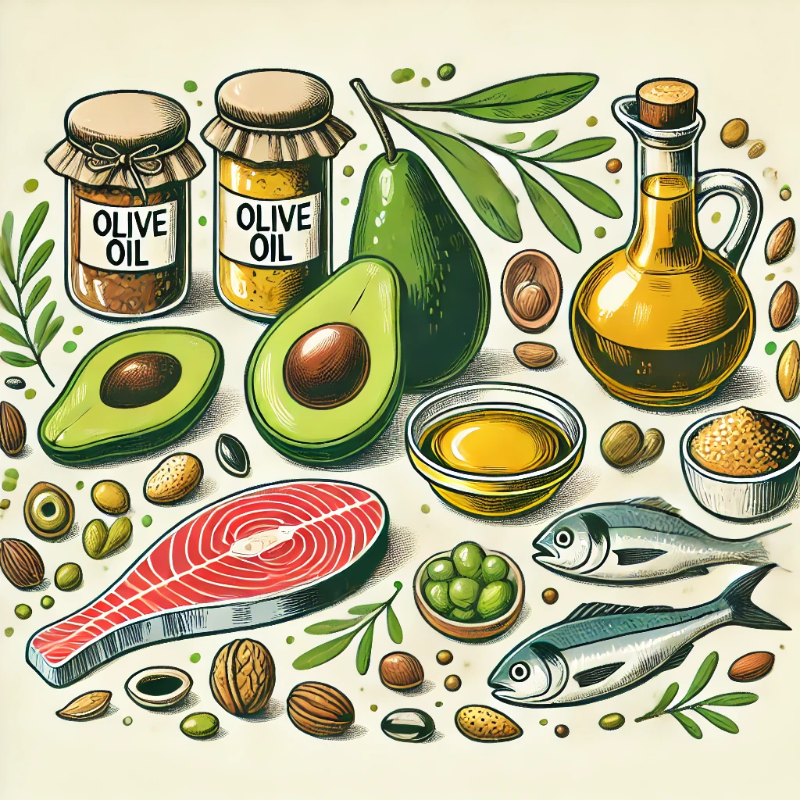
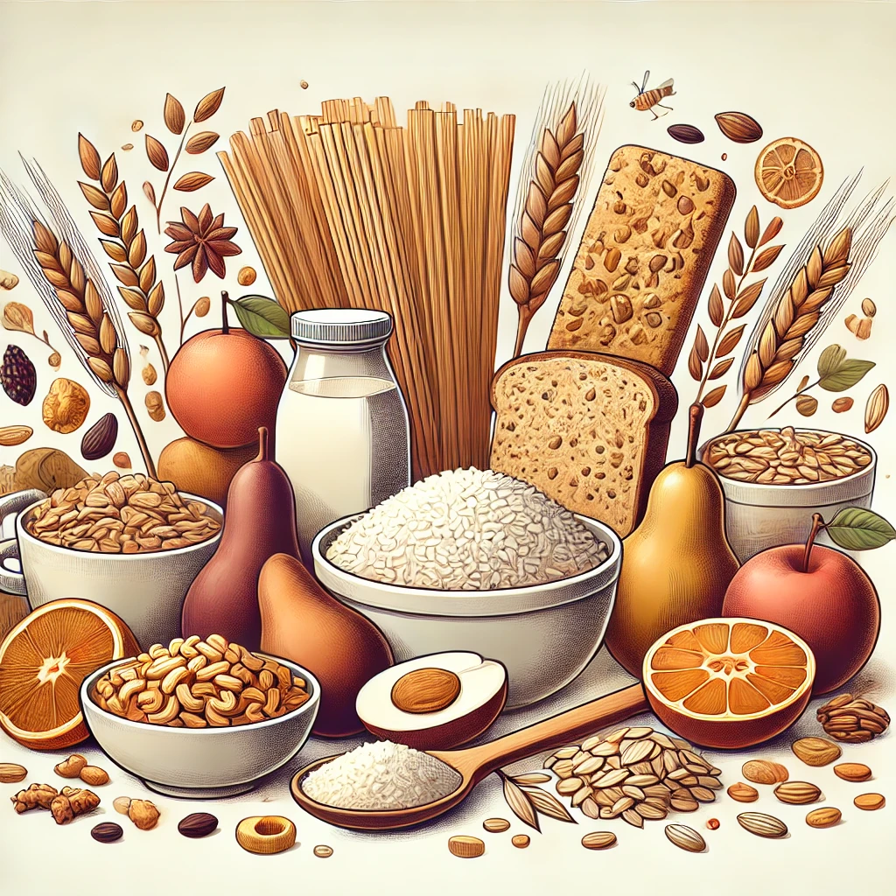
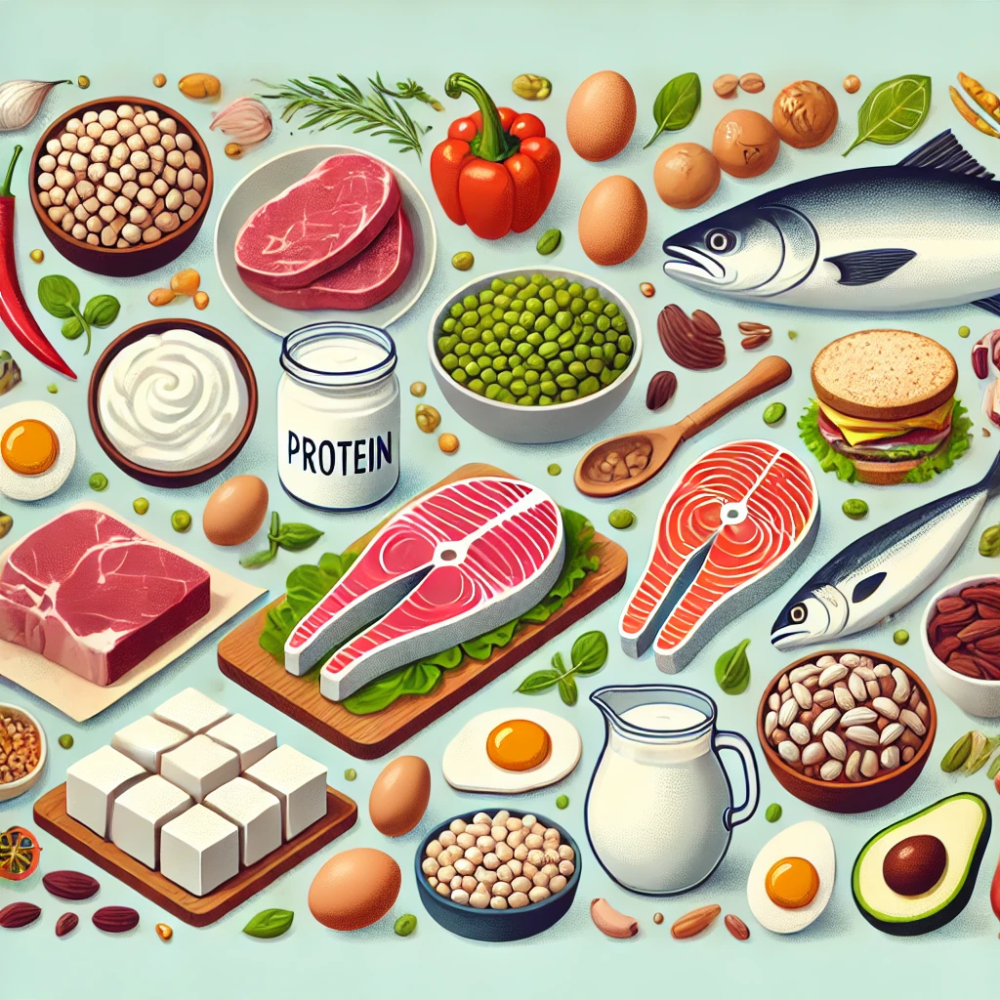
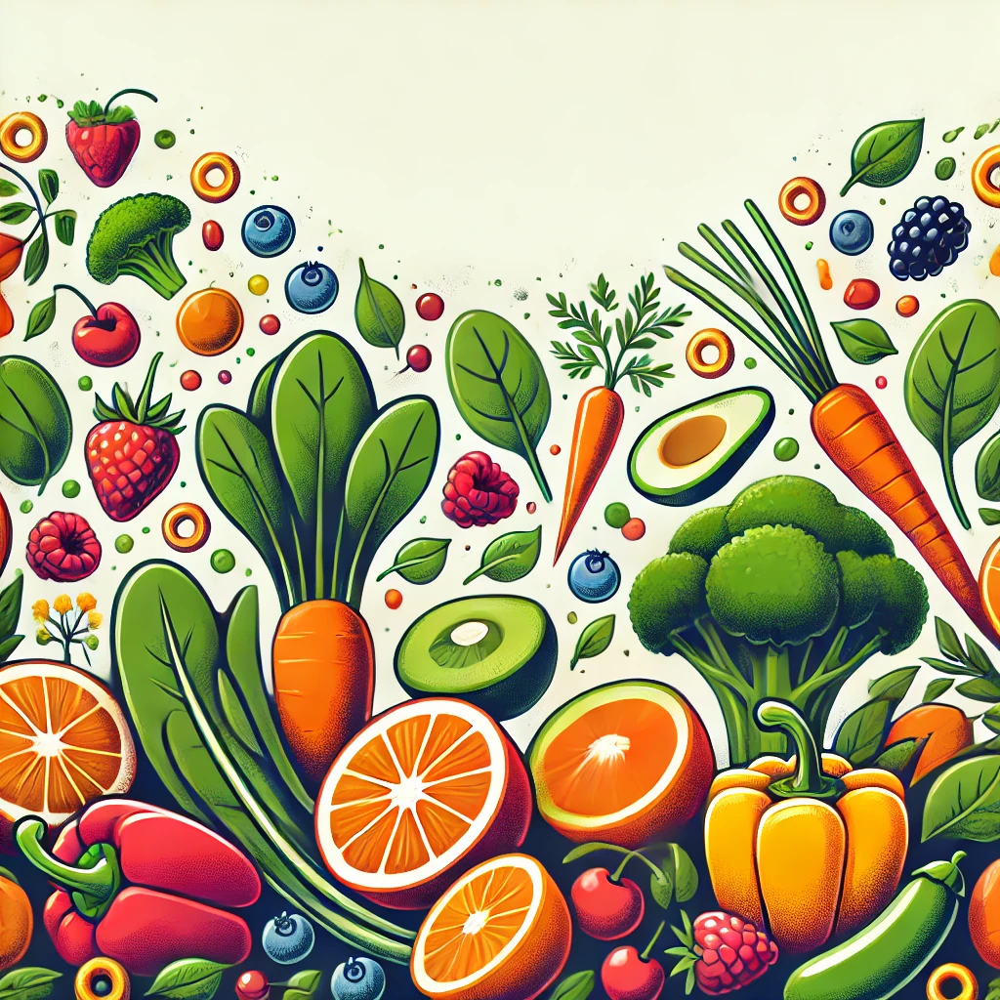
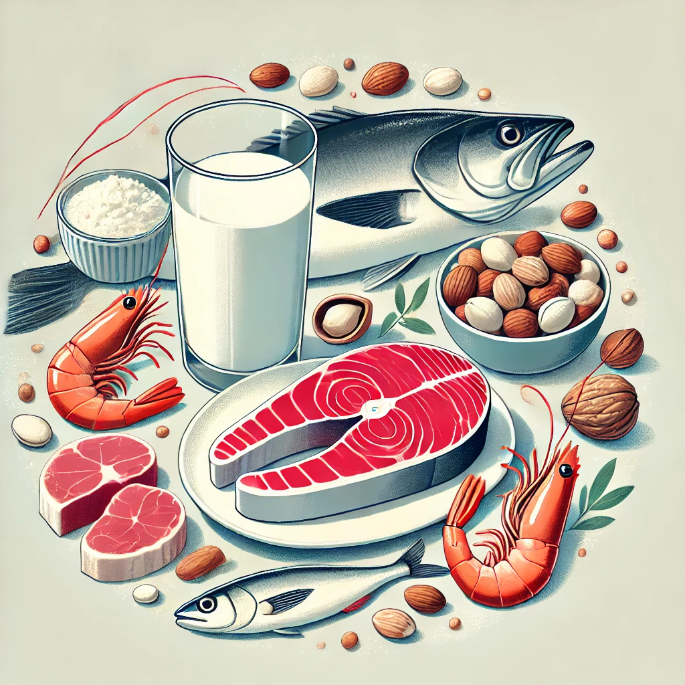

Aprenda como macronutrientes, micronutrientes e hidratação desempenham um papel crucial na sua performance esportiva.
Macronutrientes
Macronutrientes são essenciais para fornecer energia e ajudar na recuperação muscular.

Gorduras
Fonte de energia de longa duração, ajudam na absorção de vitaminas e na produção de hormônios.
Exemplos: Abacate, nozes, sementes, azeite de oliva, óleo de coco.
Imagem gerada por inteligência artificial usando a ferramenta DALL-E da OpenAI.

Carboidratos
Principal fonte de energia para exercícios, reabastecem os estoques de glicogênio nos músculos.
Exemplos: Arroz, massas, pão integral, batata-doce, aveia, frutas.
Imagem gerada por inteligência artificial usando a ferramenta DALL-E da OpenAI.

Proteínas
Essenciais para a recuperação e crescimento muscular, reparam os tecidos após o exercício.
Exemplos: Carnes magras, peixe, ovos, feijão, lentilha, tofu, iogurte grego.
Imagem gerada por inteligência artificial usando a ferramenta DALL-E da OpenAI.
Micronutrientes
Vitaminas e minerais são fundamentais para funções corporais como imunidade e contração muscular.

Vitaminas
Vitaminas como A, C, D e E são cruciais para a saúde geral e a recuperação.
Exemplos: Cenoura, laranja, espinafre, amêndoas.
Imagem gerada por inteligência artificial usando a ferramenta DALL-E da OpenAI.

Minerais
Essenciais para funções como transporte de oxigênio e saúde óssea.
Exemplos: Leite, carne vermelha, frutos do mar, castanhas.
Imagem gerada por inteligência artificial usando a ferramenta DALL-E da OpenAI.
Hidratação
Manter-se hidratado é crucial para a performance. Saiba como e quando se hidratar corretamente.
Antes do Exercício
Beba 500ml de água cerca de 2 horas antes do exercício.
Durante o Exercício
Beba pequenos goles de água a cada 15-20 minutos.
Após o Exercício
Reidrate-se e, se necessário, use bebidas isotônicas.